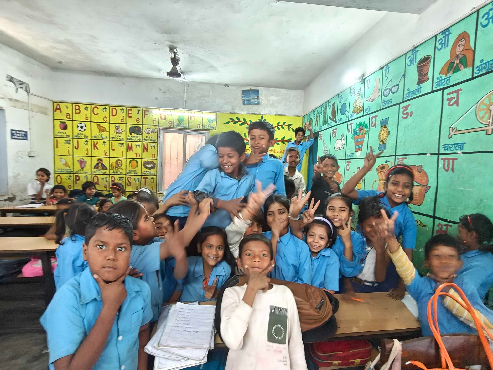

Freedom
Children can ask questions.
They can try an idea, change their mind and learn from a mistake without being reduced to a mark.
About Diksha · Bihar · Since 2010
The first children came after school. Over the years, they studied, played, performed, made decisions and grew up with the centre.
Some of those young people later returned as educators and mentors. That long relationship with children and families has shaped Diksha’s way of working.

01 · Where we began
KHEL Patna began in 2010 as an after-school learning centre.
Children came for help with reading, maths and schoolwork. The centre gave them books, teachers, computers and time with adults who knew them.
The timetable gradually made room for theatre, art, football, technology and Bal Sansad. Children began to present their work, represent one another and take responsibility for parts of the centre.
The programmes have changed as the children and the organisation have grown. Educators still need to know each learner, notice what they are ready for and be there the next day.
Nine years that shaped Diksha
From 2010 until 2019, Badi Maa volunteered full time with Diksha.
She worked at the centre with children and educators through the years when Diksha was finding its feet. She gave the organisation her time, care, discipline and steadiness.
Children remember her simplicity, warmth and joy. She was present for the ordinary work of the day, as well as events and celebrations.
When Diksha speaks about relationships, it means this kind of long presence. Badi Maa knew the ordinary work of the centre because she was there doing it.
02 · How the work grew
KHEL Bihta opened in 2022 and KHEL Sarairanjan in 2024. At the same time, children at the older centre were growing into youth leaders, and some returned to work with younger children.
The first centre, where Diksha’s approach developed with children over time.
The second KHEL centre, opened twelve years after Patna.
A centre in Samastipur working with children, families and nearby schools.
Some young people who grew up with KHEL now work as educators and mentors.
03 · What holds us together
Children are expected to work, practise and take responsibility. There is also time to play, make things, speak freely and enjoy being with other people.
Freedom
They can try an idea, change their mind and learn from a mistake without being reduced to a mark.
Joy
Theatre, sport, art and stories sit alongside schoolwork. Friendship is part of why children return.
Democracy
Through Bal Sansad and open-house meetings, children speak, decide and take responsibility for their centres.
The three Rs

People at Diksha
Former KHEL students now work alongside educators, volunteers and other young people at the centres.
Families, board members and partners also carry part of the work. Diksha provides the space and support. Children and young people decide what they will do with it.
“I belong. I can lead. I matter.”
Our work
Read about KHEL, current programmes and completed projects.